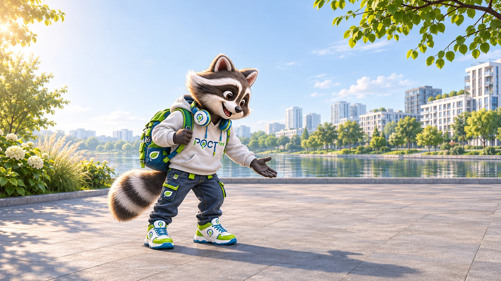

Пластик
Из ПЭТ-бутылки можно сделать волокно для флиса. Перед сдачей опустоши бутылку и сомни её.

Сортировка с Веней
Подними предмет с земли
и отправь в подходящий бак.
Можно и двумя касаниями —
сначала предмет, затем бак.
Дома всё так же, как в игре. Посмотри, из чего сделана упаковка, и прочитай, что принимает твой контейнер.
Из ПЭТ-бутылки можно сделать волокно для флиса. Перед сдачей опустоши бутылку и сомни её.
Старая коробка может стать новым картоном. Сложи её и храни в сухом месте до сдачи.
Из стеклянной банки можно выплавить новую. Опустоши банку, сними крышку и сдай стекло отдельно.
Цвета баков в городе могут отличаться. Ориентируйся на надпись на контейнере.